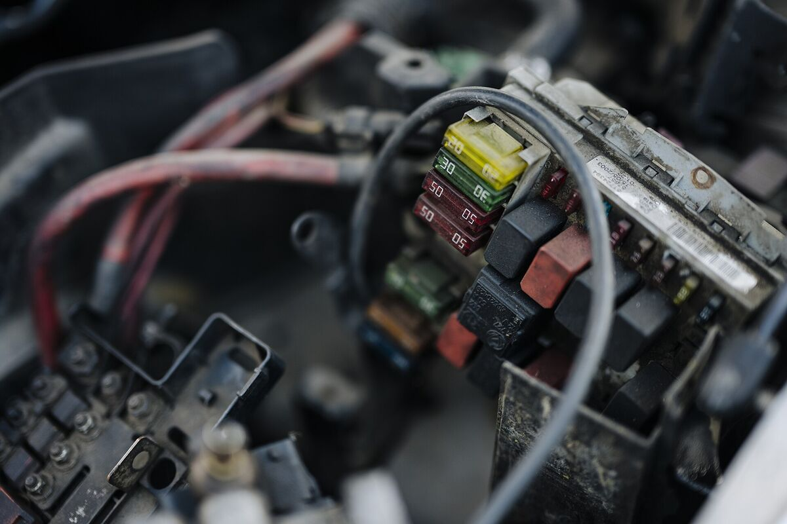
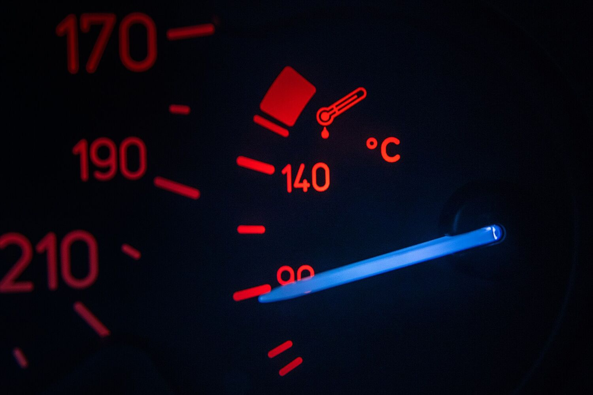
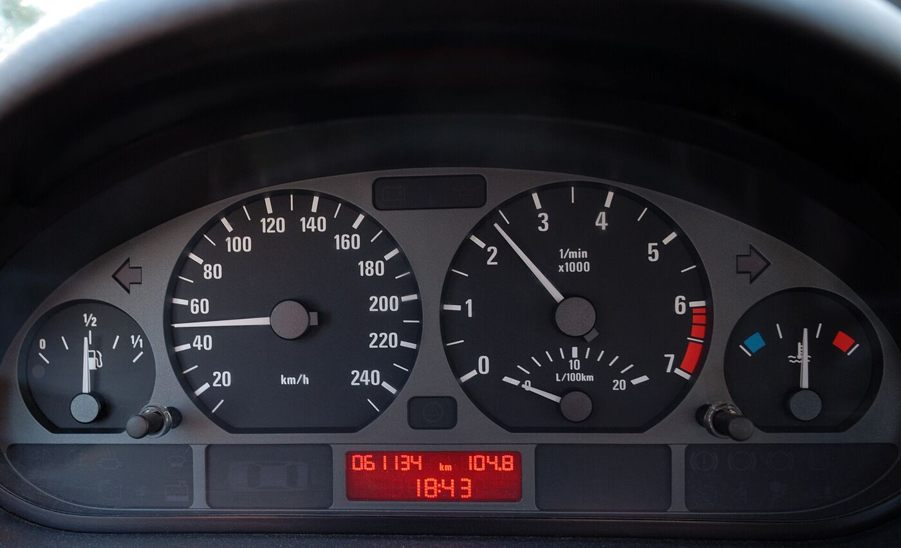

מצבריםBatteries
בדיקה והחלפה. על המדף מחכים מצברים חדשים.Testing and replacement. New batteries wait on the shelf.
קונספט לדוגמה שנבנה עבור חשמל רכב אשקר (גוטמן) · זה אינו האתר הרשמי של העסקA sample concept built for Ashkar (Gutman) Auto Electric · This is not the business’s official website
נורה נדלקה בלוח השעונים? חשמל רכב אשקר (גוטמן), מוסך לחשמל רכב ברחוב חרושת 52, קריית ביאליק.A light came on in the dash? Ashkar (Gutman) Auto Electric is a car-electrics garage at 52 Haroshet St, Kiryat Bialik.
מה לוח השעונים מראה כשהמצבר נחלש, ומה הוא מראה אחרי הטיפול.What the dash shows when a battery fades, and what it shows after the work.
הרכב עומד. 12.1 וולט במנוחה, פחות מ-12.6 של מצבר מלא.Parked. 12.1 V at rest, below the 12.6 V of a full battery.
המפתח במצב ON: כל הנורות נדלקות לבדיקה עצמית, והמתח יורד עוד קצת.Key to ON: every lamp lights for its self-check, and the voltage sags a little more.
התנעה: המתנע מושך זרם גבוה, המתח צונח מתחת ל-10 וולט ונשמע רק קליק.Cranking: the starter pulls a heavy current, voltage falls under 10 V, and all you hear is a click.
אחרי בדיקה וטיפול: המנוע עובד בסרק, האלטרנטור מטעין ב-14.2 וולט ונורית המצבר כבתה.After testing and repair: the engine idles, the alternator charges at 14.2 V and the battery light is out.
תמונות להמחשה · הערכים בלוח הם דוגמה להסברIllustrative photos · the readings are an example for explanation
חשמל רכב הוא המומחיות של המקום. אלה העבודות שמגיעות למוסך.Car electrics is the speciality here. This is the work that comes in.
בדיקה והחלפה. על המדף מחכים מצברים חדשים.Testing and replacement. New batteries wait on the shelf.
המתג, המנוע והמנגנון.The switch, the motor and the regulator.

נורות בלוח, נתיכים וחיווט.Dash lights, fuses and wiring.
מה שמטעין את הרכב ומה שמתניע אותו.What charges the car, and what cranks it.
לקוחות מספרים גם על שירותי חילוץ. התקשרו לתאם.Customers also mention a recovery service. Call to arrange it.

חשמל בראש, ויש גם אפשרות למכניקה.Electrics first, and mechanical work is an option too.
ככה מזהים את המוסך ברחוב חרושת, באזור התעשייה של קריית ביאליק.That’s how you spot the garage on Haroshet St, in the Kiryat Bialik industrial zone.

4.3מתוך 5 · 68 ביקורות בגוגלout of 5 · 68 Google reviews
לקוחה פה כבר שנים (וגם המשפחה). שירות מעולה, מקצוענים וחשוב מהכל הוגנים והגונים.
A customer here for years (my family too). Excellent service, professionals, and most important of all, fair and honest.
הגעתי עם בעיית מצבר.קיבלו אותי בסבר פנים יפות.טיפלו בבעיה למרות שהמצבר לא נקנה דרכם.אנשים מדהימים,ממליץ בחום
I came with a battery problem. They welcomed me warmly and dealt with it even though the battery wasn’t bought from them. Amazing people, highly recommended.
באתי לתקן חלון לאוטו. היה קצת עומס אבל התייחסו יפה ובסוף קראו למומחה שהגיע מהר ותיקנו לי את המנוע במחיר הוגן והם מקצועיים
I came to get a car window fixed. It was a bit busy, but they treated me well, called in a specialist who came quickly, and fixed the motor at a fair price. They’re professional.
הייתי אצלם כמה פעמים, השירות מצוין והיחס מעולה ממליצה מאוד!!
I’ve been there a few times. Excellent service and a great attitude, I really recommend them!!
סמנו בלוח, ספרו מה קורה, וההודעה למוסך נכתבת לבד.Mark it on the panel, say what’s happening, and the message to the garage writes itself.
לקוח כתב בגוגל שטיפלו בבעיית המצבר שלו, למרות שהמצבר לא נקנה דרכם.A customer wrote on Google that they handled his battery problem even though the battery wasn’t bought there.
חשמל רכב הוא המומחיות של המקום, ויש גם אפשרות למכניקה. ספרו בטלפון מה הרכב צריך.Car electrics is the speciality, and mechanical work is an option too. Tell them on the phone what the car needs.
ביקורות בגוגל מזכירות שירותי חילוץ. התקשרו ל-050-770-7686 כדי לתאם.Google reviews mention a recovery service. Call 050-770-7686 to arrange it.
השעות לא מפורסמות בגוגל, לכן כדאי להתקשר או לשלוח וואטסאפ לפני שמגיעים.The hours aren’t listed on Google, so it’s best to call or WhatsApp before you come.
רחוב חרושת 52, באזור התעשייה של קריית ביאליק. מחפשים את השלט האדום ואת התריס הכחול.52 Haroshet St, in the Kiryat Bialik industrial zone. Look for the red sign and the blue shutter.